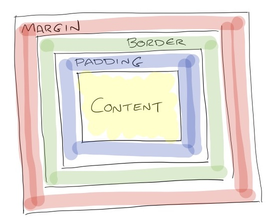

CSS
CSS stands for cascading style sheets. It is used to describe how a html document should look. In web development typically this means how it will look on the screen but it could also mean how it will look on paper. CSS is a style sheet language (as opposed to a mark up language or programming language). Using CSS styles can be applied to elements on the page.
CSS Syntax
CSS styles are applied to elements they have the following syntax:
h1 {
color: #ff0000;
}
The entire block is called the rule set. This is made up of the selector (in this case h1) and the declaration (in this case color: #ff0000). The declaration has 2 parts, the property (color) and the property value (#ff0000). The selector can have multiple properties e.g.
p {
color: #ff00ff;
font-size; 10px;
}
Selectors
The selectors determine what part of the page the declarations will be applied to.
Element Selectors
This is when a style is applied to every element of a certain type. In the example below there are h1, p and span tags and the selectors in the CSS have the same names as the tags they are applied to
See the Pen PRGxaG by Susie (@susiec20) on CodePen.
Class Selectors
Class selectors must always have a . at the start of their name when declared in the CSS. They can have any name provided it has no spaces. To apply the class to an element use the syntax class=className. In the example below the class blue-text is applied to a span tag and a h1 tag. Any element with the class on it will have the declarations for that class appiled to it e.g. turning the text blue.
See the Pen Class Selectors by Susie (@susiec20) on CodePen.
ID Selectors
ID selectors always start with a # when declared in the CSS and can have any name provided it has no spaces. An ID can only be applied to one element and allow you to uniquely identify a single element on the page.
See the Pen ID Selector by Susie (@susiec20) on CodePen.
Pseudo Classes
Pseudo classes are added to the end of selectors to indicate that you only want the style applied on that selector when the element is in a certain state e.g. when the element is hovered over. The syntax is selectorName:pseudoClass. In the example below the paragraph text changes size when you hover over it.
See the Pen QmKzgV by Susie (@susiec20) on CodePen.
Properties
There is a finite list of CSS properties that can be set on elements. Common CSS properties are available here.
Cascading Styles
Inheritance
In CSS, inheritance controls what happens when property is set for a specific element. The the example below color is an inherited property. This is why the text in the span tag is red as well despite the colour of the text in the span tag never being specifically set. border is not an inherited property only the paragraph has a border around it. The text in the span tag does not have a border around it.
See the Pen CSS Inheritance by Susie (@susiec20) on CodePen.
Inherited styles explain why the style of your web page can change even when a style has not been applied directly to an element. These styles can be overridden by more specific styles as shown in the example below.
See the Pen Override styles by Susie (@susiec20) on CodePen.
If multiple styles are added with the same level of importance, for example definining multiple rule sets with the same selector, the declration that is further down the document will be applied. As shown in this example:
See the Pen Identical styles by Susie (@susiec20) on CodePen.
Only conflicting rules are overridden. So in this case the background colour is applied from the first rule set but the value for the color property is overridden by the property further down the CSS document.
Positioning Items on the Page - Box Model
A web page is rendered by the browser as a series of boxes. CSS is used to determine the size, postition and properties (colour, border size, etc) of the box. Every box is made up of 4 parts:

- Content: This is the actual content of the element, text, an image etc. The size is set using the properties
widthansheight. - Padding: This goes around the content area. The dimensions are set using
padding-top,padding-bottom,padding-rightandpadding-left. This guide covers how to use thepaddingproperty as shorthand to set all 4 padding values. - Border: The border goes around the padding area. The width of the border is set using
border-widthand the area. Theborder-styleproperty makes the border visible. This guide covers how to use theborderproperty to set multiple border properties at once. - Margin: The margin is around the border and separates the element from it's nieghbours. The size is set using
margin-top,margin-right,margin-bottom,margin-left. This guide covers how to use themarginproperty as shorthand to set all 4 padding margin.
See the Pen Box Model CSS by Susie (@susiec20) on CodePen.
Padding seperates content from the border and the margin add space between the element in relation to other elements.
Colour Names
Colours in CSS are usually written as hexidecimal numbers. This website provides a tool to get a colour's hexidecimal value.
Applying CSS to HTML
Typically CSS is written in a different file to the HTML. This is known as an external stylesheet. In order for the styles in the css file to be applied to the html the css file needs to be linked to the html document. Imagine you have created 2 files in the same directory (or folder) on your computer one called style.css and one called index.html. To link them together a <link> tag nested within in the <head> tag is used. This is done within the head tag as linking to a style sheet is information about the webpage (metadata) as opposed to information that should appear on the webpage.
<!DOCTYPE html>
<html>
<head>
<link rel="stylesheet" href="style.css">
</head>
<body>
</body>
</html>
Styles can also be applied using inline stylesheets and inline styles this article covers alternative approaches in more detail.